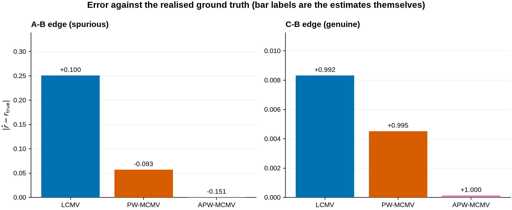
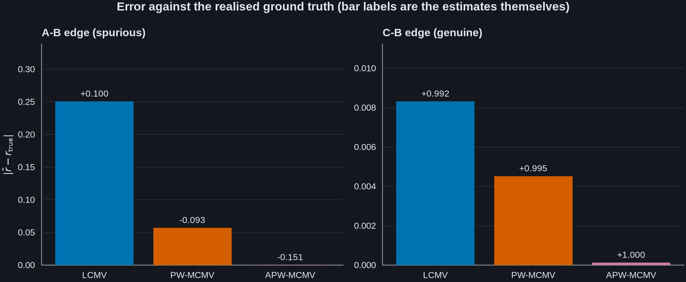
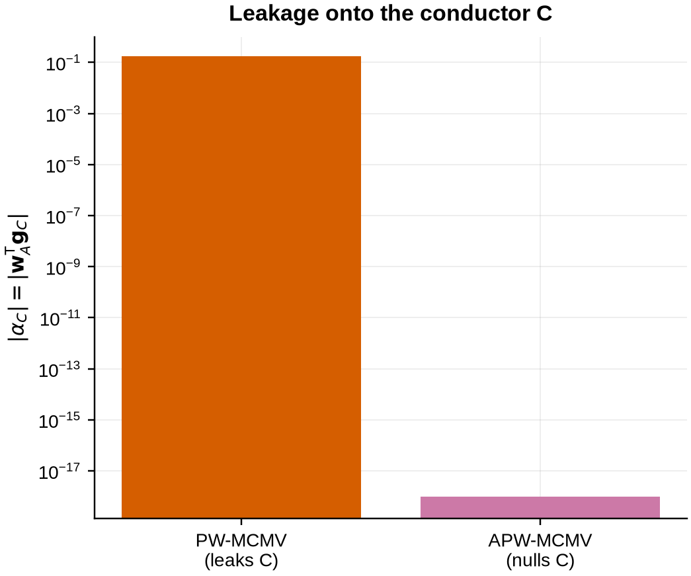
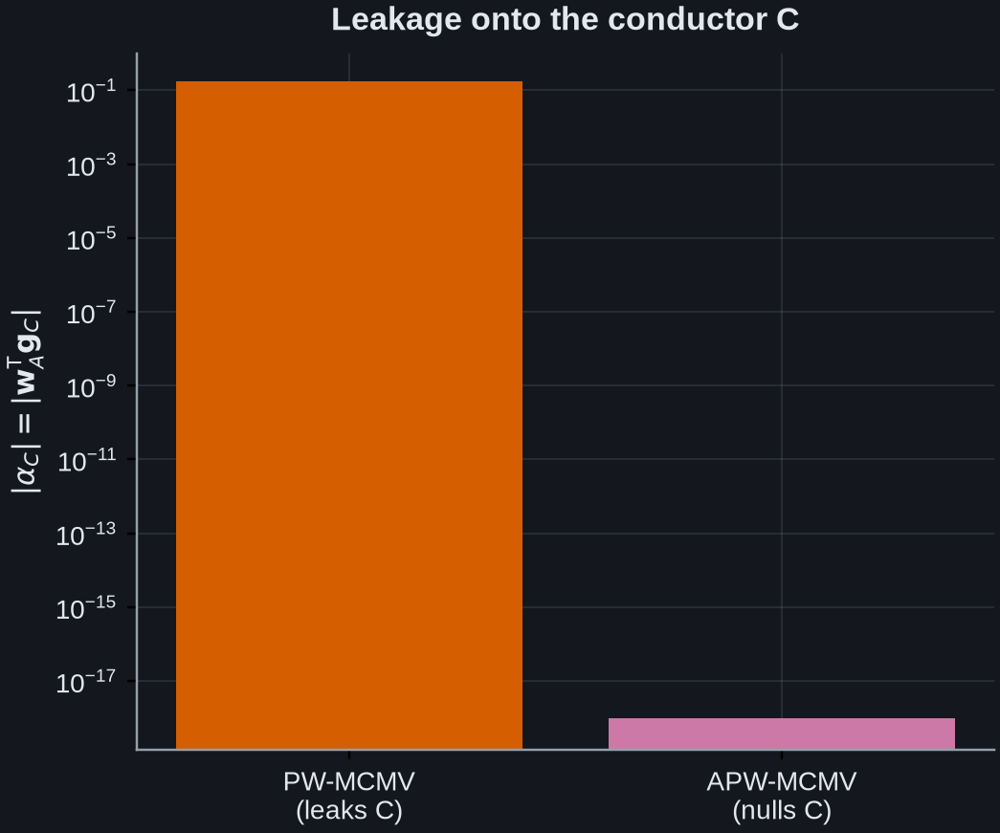

Note
Go to the end to download the full example code.
Leakage-free connectivity: pairwise and augmented MCMV#
Functional connectivity is confounded by the spatial spread of the inverse operator: a beamformer that leaks one region into another manufactures coupling that is not there. This example shows, on a controlled simulation, how pairwise MCMV (PW-MCMV) and augmented pairwise MCMV (APW-MCMV) remove that confound, following Nunes et al. (2020).
We place three fixed-orientation sources in an EEG sphere model (no dataset download):
AandCsit about 2.4 cm apart, soA’s leadfield overlapsC’s;Bis far from both;Cis genuinely coupled toB(they share a slow amplitude envelope), whileAcarries an independent envelope.
A and B therefore share no common drive. Their realised envelope
correlation over a finite recording is not exactly zero: an envelope is slowly
varying, so a recording holds only a limited number of independent envelope
samples and their sample correlation scatters about zero. Even so, that realised
value is known exactly here, and it is the target a good estimator should
reproduce. Yet two things can push an estimate away from it:
Direct leakage / cancellation: a single-source LCMV reconstructs each region with an independent filter, so \(\hat s_A\) is a mixture of every active source and picks up
Bdirectly.Indirect leakage: even after we forbid
AandBfrom leaking into each other (a 2-source MCMV), \(\hat s_A\) still contains a copy of the conductorC; becauseCis coupled toB, that copy correlates with \(\hat s_B\) and a spurious edge survives.
PW-MCMV constrains \(\{A, B\}\) jointly, so
\(\mathbf{w}_A^{\mathsf T}\mathbf{g}_B = 0\) exactly and the direct path is
gone. APW-MCMV additionally adds the conductor C to the beamformer, which
places an exact null \(\mathbf{w}_A^{\mathsf T}\mathbf{g}_C = 0\) and closes
the indirect path. The leakage coefficient
\(\alpha_C = \mathbf{w}_A^{\mathsf T}\mathbf{g}_C\) is the sharpest summary:
nonzero for PW-MCMV, machine-zero for APW-MCMV.
Two details follow the paper. Connectivity is amplitude-envelope correlation computed plainly, with no orthogonalisation, because MCMV already removes leakage. The weights are built from a band-limited covariance matching the analysis band.
# Authors: Sepehr Shirani <sepehrshirani@gmail.com>, <s.shirani@ucl.ac.uk>
# Muzhi Wang <muzhi.wang@ucl.ac.uk>
# Jade Serfaty <jade.serfaty.17@ucl.ac.uk>
# License: BSD-3-Clause
import matplotlib.pyplot as plt
import mne
import numpy as np
from mne.beamformer import apply_lcmv, make_lcmv
from scipy.signal import hilbert
from advance_beamlab import (
ar1_surrogate_significance,
augmented_pairwise_mcmv_connectivity,
make_mcmv,
pairwise_mcmv_connectivity,
reconstruct_pairwise_mcmv,
)
Build a self-contained EEG forward: a standard 10-20 montage on a single-shell sphere, converted to fixed orientation. A fixed-orientation forward keeps the injected topographies and the beamformer’s model of them perfectly consistent.
montage = mne.channels.make_standard_montage("standard_1020")
ch_names = list(dict.fromkeys(montage.ch_names))
info = mne.create_info(ch_names, sfreq=200.0, ch_types="eeg")
info.set_montage(montage)
sphere = mne.make_sphere_model("auto", "auto", info)
src = mne.setup_volume_source_space(sphere=sphere, pos=12.0)
fwd = mne.make_forward_solution(
info, trans=None, src=src, bem=sphere, eeg=True, meg=False
)
fwd = mne.convert_forward_solution(fwd, force_fixed=True, use_cps=False)
leadfield = fwd["sol"]["data"] # (n_channels, n_sources)
source_rr = fwd["source_rr"]
n_channels = len(ch_names)
Choose the three sources. A is central; C is a near neighbour ~2.4 cm
away (so A leaks into it); B is ~9 cm away from A.
idx_a = int(np.argmin(np.linalg.norm(source_rr - source_rr.mean(0), axis=1)))
dist_from_a = np.linalg.norm(source_rr - source_rr[idx_a], axis=1)
idx_c = int(np.argmin(np.abs(dist_from_a - 0.024)))
idx_b = int(np.argmin(np.abs(dist_from_a - 0.09)))
rois = [idx_a, idx_b, idx_c] # matrix order: A=0, B=1, C=2
lead_a = leadfield[:, idx_a]
lead_b = leadfield[:, idx_b]
lead_c = leadfield[:, idx_c]
d_ac = np.linalg.norm(source_rr[idx_a] - source_rr[idx_c]) * 100
print(f"A-C distance: {d_ac:.1f} cm")
d_ab = np.linalg.norm(source_rr[idx_a] - source_rr[idx_b]) * 100
print(f"A-B distance: {d_ab:.1f} cm")
A-C distance: 2.4 cm
A-B distance: 8.7 cm
Simulate alpha-band (10 Hz) sources with slowly varying amplitude envelopes.
B shares C’s envelope (a genuine C-B coupling); A’s envelope is
independent (no true A-B coupling). The sensor data is their leadfield mixture
plus white sensor noise.
rng = np.random.default_rng(0)
sfreq = 200.0
n_times = int(120 * sfreq)
times = np.arange(n_times) / sfreq
def alpha_carrier(envelope, phase):
"""A 10 Hz carrier modulated by a slow amplitude envelope."""
return envelope * np.cos(2 * np.pi * 10 * times + phase)
def slow_envelope(seed):
"""A smooth, strictly positive amplitude envelope."""
smoother = np.exp(-0.5 * (np.arange(-200, 201) / 60) ** 2)
smoother /= smoother.sum()
white = np.random.default_rng(seed).standard_normal(n_times)
raw = np.convolve(white, smoother, "same")
return 1.0 + 0.8 * (raw - raw.mean()) / raw.std()
env_shared = slow_envelope(1) # drives both C and B -> genuine coupling
env_a = slow_envelope(2) # independent -> no true A-B coupling
sig_c = 2.0 * alpha_carrier(env_shared, 0.0)
sig_b = alpha_carrier(env_shared, 1.3)
sig_a = alpha_carrier(env_a, 2.1)
signal = np.outer(lead_a, sig_a) + np.outer(lead_b, sig_b) + np.outer(lead_c, sig_c)
noise = 0.1 * np.abs(lead_a).max() * rng.standard_normal((n_channels, n_times))
data = signal + noise
Estimate the covariances. For envelope connectivity the sources are already narrow-band, so the broadband covariance is the band covariance here; on broadband recordings you would band-pass first and estimate the covariance in the band. Resting-state analyses have no baseline, so a diagonal (ad-hoc) noise covariance is used, as in the paper.
raw = mne.io.RawArray(data, info)
raw.set_eeg_reference("average", projection=True)
data_cov = mne.compute_covariance(
mne.make_fixed_length_epochs(raw, duration=2.0), method="empirical"
)
noise_cov = mne.make_ad_hoc_cov(info)
evoked = mne.EvokedArray(raw.get_data(), info, tmin=0.0)
evoked.set_eeg_reference("average", projection=True)
def envelope_correlation(x, y):
"""Signed Pearson correlation of the Hilbert amplitude envelopes."""
return float(np.corrcoef(np.abs(hilbert(x)), np.abs(hilbert(y)))[0, 1])
# ground-truth connectivity from the clean source signals
true_ab = envelope_correlation(sig_a, sig_b)
true_cb = envelope_correlation(sig_c, sig_b)
LCMV connectivity: reconstruct each region with an independent single-source, unit-gain LCMV, then correlate the envelopes.
PW-MCMV connectivity: every pair is reconstructed with a 2-source MCMV. The
metric is delegated to mne-connectivity (plain envelope correlation).
conn_pw = pairwise_mcmv_connectivity(
evoked,
evoked.info,
fwd,
data_cov,
rois,
method="envelope",
noise_cov=noise_cov,
absolute=False,
)
Which edges are worth re-estimating? APW-MCMV is more expensive than
PW-MCMV (a higher-order beamformer per pair), so the paper applies it only to
edges that survive a significance test. That test is
ar1_surrogate_significance(): it fits an AR(1) model to
each region’s reconstructed time course, builds surrogates with the same
temporal smoothness but no coupling, and thresholds the Fisher-transformed
connectivity against that null with Benjamini-Hochberg FDR control.
It needs one representative time course per region.
reconstruct_pairwise_mcmv() gives them directly: it is
the primitive underneath pairwise_mcmv_connectivity and returns the
leakage-corrected reconstruction of every pair.
pairs, pair_tcs = reconstruct_pairwise_mcmv(
evoked, evoked.info, fwd, data_cov, rois, noise_cov=noise_cov
)
reference = np.empty((len(rois), evoked.data.shape[1]))
for i in range(len(rois)):
k, row = next(
(k, r)
for k, pr in enumerate(pairs)
for r, member in enumerate(pr)
if member == i
)
reference[i] = pair_tcs[k][row]
screen = ar1_surrogate_significance(
conn_pw,
reference,
method="envelope",
sfreq=evoked.info["sfreq"],
n_surrogates=200,
random_state=0,
)
labels = ("A", "B", "C")
for i in range(3):
for j in range(i + 1, 3):
verdict = "retained" if screen[i, j] else "rejected"
print(f"{labels[i]}-{labels[j]}: r = {conn_pw[i, j]:+.3f} {verdict}")
A-B: r = -0.093 rejected
A-C: r = -0.143 retained
B-C: r = +0.995 retained
The screen keeps the genuine B–C coupling, keeps A–C, and
rejects A–B. Two things are worth drawing out.
The rejection of A–B is the test working. By this point PW-MCMV has
already pulled that edge down to -0.093, and a screen calibrated against an
AR(1) null is designed to discard exactly such a small residual. On this
simulation the spurious edge would never reach APW-MCMV at all. The two
corrections are complementary rather than redundant.
A–C being retained is the harder case, and it is not a failure of the
estimator: PW-MCMV puts it at -0.143 against a realised truth of -0.151, so the
estimate is accurate. What the screen is asking is whether a correlation that
size could have arisen by chance from two independent slow envelopes, and over
a finite recording that judgement is genuinely marginal. It is a reminder that
the screen tests the observed statistic, not the generative model.
APW-MCMV connectivity. To exercise the augmentation on the edge whose
correction this example is about, we hand it a mask that includes A–B
as well, rather than the screen’s own output. In a real analysis you would pass
screen straight through. For the A-B pair the conductor C is added to
the beamformer: it lies within 4 cm of A and carries a significant edge.
significance = np.array(screen)
significance[0, 1] = significance[1, 0] = True # force the A-B pair through
conn_apw = augmented_pairwise_mcmv_connectivity(
evoked,
evoked.info,
fwd,
data_cov,
rois,
conn_pw,
significance,
positions=source_rr[rois],
method="envelope",
noise_cov=noise_cov,
absolute=False,
)
The leakage coefficient onto the conductor, \(\alpha_C\), makes the
mechanism explicit: the pairwise filter for A leaks C (nonzero), while
adding C to the beamformer nulls it to machine precision.
filt_pw = make_mcmv(
evoked.info,
fwd,
data_cov,
sources=[idx_a, idx_b],
noise_cov=noise_cov,
weight_norm="unit-gain",
)
filt_apw = make_mcmv(
evoked.info,
fwd,
data_cov,
sources=[idx_a, idx_b, idx_c],
noise_cov=noise_cov,
weight_norm="unit-gain",
)
alpha_c_pw = abs(float(filt_pw["weights"][0] @ lead_c))
alpha_c_apw = abs(float(filt_apw["weights"][0] @ lead_c))
print(f"\n{'':14s}{'A-B (spurious)':>16s}{'C-B (genuine)':>16s}")
print(f"{'ground truth':14s}{true_ab:16.3f}{true_cb:16.3f}")
print(f"{'LCMV':14s}{lcmv_ab:16.3f}{lcmv_cb:16.3f}")
print(f"{'PW-MCMV':14s}{conn_pw[0, 1]:16.3f}{conn_pw[1, 2]:16.3f}")
print(f"{'APW-MCMV':14s}{conn_apw[0, 1]:16.3f}{conn_apw[1, 2]:16.3f}")
print(f"\nleakage alpha_C: PW-MCMV = {alpha_c_pw:.3f} APW-MCMV = {alpha_c_apw:.1e}")
A-B (spurious) C-B (genuine)
ground truth -0.151 1.000
LCMV 0.100 0.992
PW-MCMV -0.093 0.995
APW-MCMV -0.151 1.000
leakage alpha_C: PW-MCMV = 0.171 APW-MCMV = 0.0e+00
How far each estimate is from the truth. What matters is the error, not the raw value, so that is what is plotted: \(|\hat r - r_{\mathrm{true}}|\) for each edge.
Note the ground-truth A-B correlation is not exactly zero. A and B are
driven by independent envelopes, but an envelope is by construction slowly
varying, so a finite recording contains only a limited number of independent
envelope samples and their sample correlation lands a little away from zero by
chance. That realised value, not zero, is the target every method should hit.
It is printed above.
LCMV is far off on the A-B edge and gets the sign wrong. PW-MCMV removes the
direct leakage and closes most of the gap. APW-MCMV, which additionally nulls
the conductor C, recovers the realised value essentially exactly. The right
panel confirms none of this costs anything on the genuine C-B coupling.
methods = ["LCMV", "PW-MCMV", "APW-MCMV"]
ab_values = [lcmv_ab, conn_pw[0, 1], conn_apw[0, 1]]
cb_values = [lcmv_cb, conn_pw[1, 2], conn_apw[1, 2]]
ab_err = [abs(v - true_ab) for v in ab_values]
cb_err = [abs(v - true_cb) for v in cb_values]
# C0 = established baseline, C1 = intermediate, C3 = the method being introduced,
# following the gallery-wide convention (Wong colourblind-safe cycle).
colors = ["C0", "C1", "C3"]
fig, (ax1, ax2) = plt.subplots(1, 2, figsize=(10, 4.2))
for ax, err, val, name in (
(ax1, ab_err, ab_values, "A-B edge (spurious)"),
(ax2, cb_err, cb_values, "C-B edge (genuine)"),
):
bars = ax.bar(methods, err, color=colors, zorder=3)
ax.bar_label(bars, labels=[f"{v:+.3f}" for v in val], padding=3, fontsize=9)
ax.set_title(name, loc="left")
# Each panel scaled to its own errors. Held to a common limit, the panel
# whose errors are the smaller was flattened to the axis: its bars had no
# readable height and the smallest read as missing data rather than as a
# near-zero error. The comparison the figure is making is between the three
# methods within an edge, not between the two edges, so a shared limit buys
# nothing and costs the right-hand panel entirely.
ax.set_ylim(0, max(err) * 1.35)
ax.grid(axis="x", visible=False)
ax1.set_ylabel(r"$|\hat r - r_{\mathrm{true}}|$")
fig.suptitle(
"Error against the realised ground truth (bar labels are the estimates themselves)"
)
fig.tight_layout()


The leakage coefficient. On a log scale, the conductor leakage
\(\alpha_C = \mathbf{w}_A^{\mathsf T}\mathbf{g}_C\) drops from 0.17 for
PW-MCMV to machine zero once C is added by APW-MCMV. That is the exact null
that closes the indirect-leakage path.
fig2, ax = plt.subplots(figsize=(5, 4.2))
ax.bar(
["PW-MCMV\n(leaks C)", "APW-MCMV\n(nulls C)"],
[alpha_c_pw, max(alpha_c_apw, 1e-18)],
color=["C1", "C3"],
)
ax.set_yscale("log")
# Give the axis a decade above the taller bar. Left to autoscale, the top of
# that bar sat above the highest labelled tick, so the one value the figure
# exists to report could not be read off the axis at all.
ax.set_ylim(top=10.0 ** np.ceil(np.log10(alpha_c_pw) + 0.35))
ax.set_ylabel(r"$|\alpha_C| = |\mathbf{w}_A^{\mathsf{T}} \mathbf{g}_C|$")
ax.set_title("Leakage onto the conductor C")
fig2.tight_layout()


The exact null is what distinguishes APW-MCMV: whereas PW-MCMV suppresses the
conductor only through the data-adaptive inverse (leaving a residual that
biases connectivity), APW-MCMV removes it by an explicit constraint. In a clean
three-source scene the envelope-correlation bias is modest, because the
adaptive inverse already suppresses most of C; in realistic multi-source
resting-state data the indirect leakage accumulates across many conductors,
which is where APW-MCMV’s advantage is largest (Nunes et al., 2020).
On a real recording#
Everything above is a simulation, which is where the ground truth lives. This
last section runs the same pipeline on real MEG so that the calls are shown
against data nobody constructed: 60 s of the MNE sample recording,
gradiometers, filtered to the alpha band, with four regions taken from the
anatomical parcellation.
There is no truth to score against here, so no claim is made about which estimate is right. What this shows is the sequence a user actually writes.
raw = mne.io.read_raw_fif(
mne.datasets.sample.data_path()
/ "MEG"
/ "sample"
/ "sample_audvis_filt-0-40_raw.fif",
preload=True,
)
raw.pick("grad").filter(8, 12).crop(0, 60)
subjects_dir = mne.datasets.sample.data_path() / "subjects"
fwd_real = mne.read_forward_solution(
mne.datasets.sample.data_path()
/ "MEG"
/ "sample"
/ "sample_audvis-meg-oct-6-fwd.fif"
)
fwd_real = mne.convert_forward_solution(fwd_real, force_fixed=True, use_cps=True)
fwd_real = mne.pick_channels_forward(fwd_real, raw.ch_names, ordered=True)
names = (
"transversetemporal-lh",
"transversetemporal-rh",
"pericalcarine-lh",
"pericalcarine-rh",
)
parc = {
lab.name: lab
for lab in mne.read_labels_from_annot("sample", "aparc", subjects_dir=subjects_dir)
if lab.name in names
}
src_real = fwd_real["src"]
def label_centre(label):
"""One representative grid index per label, as PW-MCMV takes point sources.
The representative point has to be chosen in space. Taking the median of the
vertices' *positions in* ``vertno`` instead, which is what this function used
to do, picks out the median FreeSurfer vertex number: an ordering with no
geometric meaning at all. It put three of these four regions outside their
own label, the auditory ones about 4 cm away in precentral cortex and in no
label at all, while the rows below were still captioned aud-L and aud-R.
"""
offset = 0 if label.hemi == "lh" else src_real[0]["nuse"]
hemi = src_real[0] if label.hemi == "lh" else src_real[1]
shared = np.intersect1d(hemi["vertno"], label.vertices)
idx = np.array([offset + int(np.where(hemi["vertno"] == v)[0][0]) for v in shared])
pos = fwd_real["source_rr"][idx]
return int(idx[np.argmin(np.linalg.norm(pos - pos.mean(0), axis=1))])
rois_real = [label_centre(parc[n]) for n in names]
# Check the regions are where they are said to be, rather than trusting that
# they are. Each chosen grid point must be a vertex of the label it stands for.
for name, roi in zip(names, rois_real, strict=True):
hemi_src = src_real[0] if parc[name].hemi == "lh" else src_real[1]
offset = 0 if parc[name].hemi == "lh" else src_real[0]["nuse"]
vertex = hemi_src["vertno"][roi - offset]
assert vertex in parc[name].vertices, f"{name} representative is outside its label"
print(f"region representatives (all inside their own label): {rois_real}")
epochs_real = mne.make_fixed_length_epochs(raw, duration=4.0, preload=True)
cov_real = mne.compute_covariance(epochs_real, method="shrunk")
noise_real = mne.make_ad_hoc_cov(raw.info)
conn_real = pairwise_mcmv_connectivity(
raw,
raw.info,
fwd_real,
cov_real,
rois_real,
method="envelope",
noise_cov=noise_real,
)
pairs_real, tcs_real = reconstruct_pairwise_mcmv(
raw, raw.info, fwd_real, cov_real, rois_real, noise_cov=noise_real
)
ref_real = np.empty((len(rois_real), np.asarray(tcs_real[0]).shape[-1]))
for i in range(len(rois_real)):
k, row = next(
(k, r) for k, pr in enumerate(pairs_real) for r, m in enumerate(pr) if m == i
)
ref_real[i] = tcs_real[k][row]
mask_real = ar1_surrogate_significance(
conn_real,
ref_real,
method="envelope",
sfreq=raw.info["sfreq"],
n_surrogates=100,
random_state=0,
)
conn_apw_real = augmented_pairwise_mcmv_connectivity(
raw,
raw.info,
fwd_real,
cov_real,
rois_real,
conn_real,
mask_real,
method="envelope",
noise_cov=noise_real,
)
short = ["aud-L", "aud-R", "vis-L", "vis-R"]
print(
f"significant edges after the AR(1) screen: {int(np.asarray(mask_real).sum() // 2)}"
)
for i in range(len(short)):
for j in range(i + 1, len(short)):
flag = "*" if np.asarray(mask_real)[i, j] else " "
print(
f" {short[i]:>5} - {short[j]:<5} {flag} PW {conn_real[i, j]:.3f} "
f"APW {conn_apw_real[i, j]:.3f}"
)
region representatives (all inside their own label): [1955, 5783, 164, 4043]
significant edges after the AR(1) screen: 2
aud-L - aud-R PW 0.148 APW 0.148
aud-L - vis-L PW 0.085 APW 0.085
aud-L - vis-R PW 0.089 APW 0.089
aud-R - vis-L * PW 0.255 APW 0.261
aud-R - vis-R PW 0.157 APW 0.157
vis-L - vis-R * PW 0.430 APW 0.430
One edge moves and the rest do not, which is what the augmentation rule
predicts. APW-MCMV adds a region to a pair’s beamformer only when that region
is in the list passed in, lies within radius of one of the pair, and itself
carries a significant edge. Of the six pairs here, only aud-R-vis-L
has such a neighbour: the two pericalcarine regions are about 3 cm apart, well
inside the 4 cm radius, and their own edge survives the AR(1) screen, so
vis-R joins that pair’s filter and the order goes from two to three. The
value it reports shifts from 0.255 to 0.261.
A shift that small is the honest expectation for a set this sparse. One extra conductor in a four-region layout carries little indirect leakage, and the augmentation is built for dense parcellations where a pair has several neighbours close enough to conduct.
This paragraph used to report that the two matrices agreed exactly, and it was right about the arithmetic and wrong about the reason. The regions were being picked by the median of their vertex numbers rather than their positions, so the four sat 4 to 8 cm apart with nothing inside the radius. Nothing in the printed output looked wrong, which is the point worth taking from it.
Total running time of the script: (0 minutes 14.860 seconds)